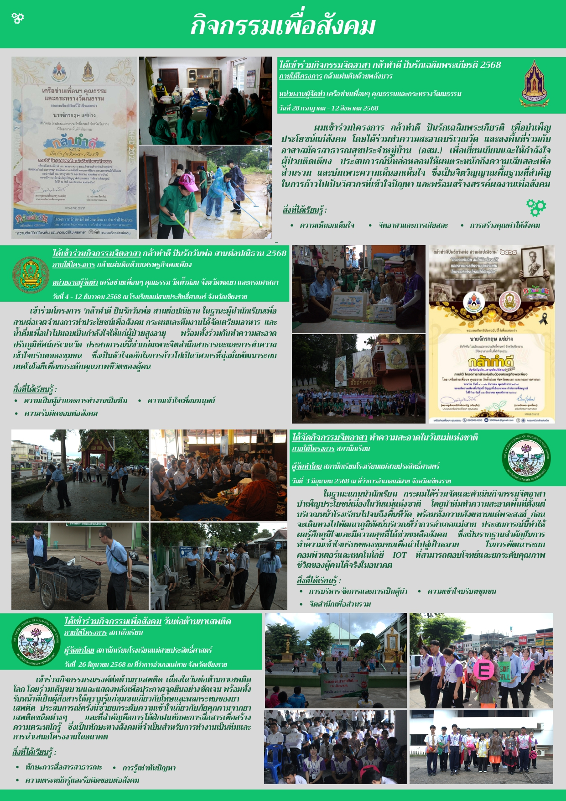
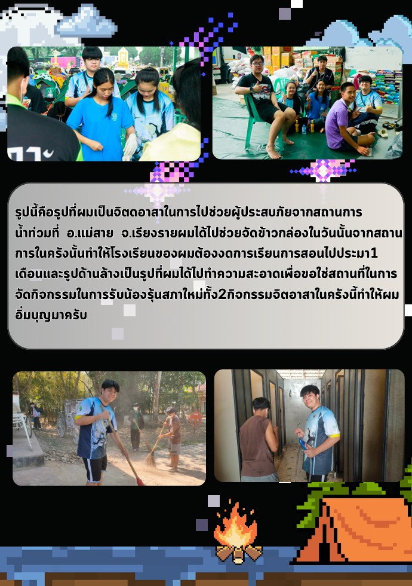

🤝 แนวทางการนำเสนอกิจกรรมจิตอาสา
- สะท้อนจิตสาธารณะ: เน้นกิจกรรมที่แสดงถึงความเสียสละ การช่วยเหลือสังคม หรือการพัฒนาชุมชนรอบตัวอย่างแท้จริง
- ภาพถ่ายการปฏิบัติงานจริง: ควรมีรูปถ่ายในขณะกำลังปฏิบัติกิจกรรมจริง (Action shot) เพื่อความน่าเชื่อถือ มากกว่าการมีแค่เกียรติบัตรอย่างเดียว
- ผลลัพธ์และคุณค่าที่ได้รับ: อธิบายว่ากิจกรรมนั้นๆ สร้างประโยชน์อะไรให้สังคม และหล่อหลอมทัศนคติที่ดีอย่างไรให้กับตัวเรา
⭐ การแสดงภาวะผู้นำ (Leadership & Council)
- บทบาทในสภานักเรียนหรือโรงเรียน: หากมีประสบการณ์เป็นประธานนักเรียน คณะกรรมการสภานักเรียน หรือหัวหน้ากลุ่ม ให้ชูบทบาทการบริหารจัดการและการแก้ปัญหาเฉพาะหน้า
- ทักษะการทำงานร่วมกับผู้อื่น: แสดงให้กรรมการเห็นว่าเราสามารถประสานงาน สื่อสาร และนำพาทีมไปสู่ความสำเร็จได้
💡 เคล็ดลับเพิ่มเติม (Pro Tip)
มหาวิทยาลัยไม่ได้มองหาแค่เด็กเรียนเก่ง แต่มองหา "ผู้นำในอนาคต" ที่พร้อมจะขับเคลื่อนสังคม การใส่กิจกรรมเพื่อสังคมและภาวะผู้นำจะช่วยให้พอร์ตของคุณดูสมบูรณ์แบบรอบด้านครับ
